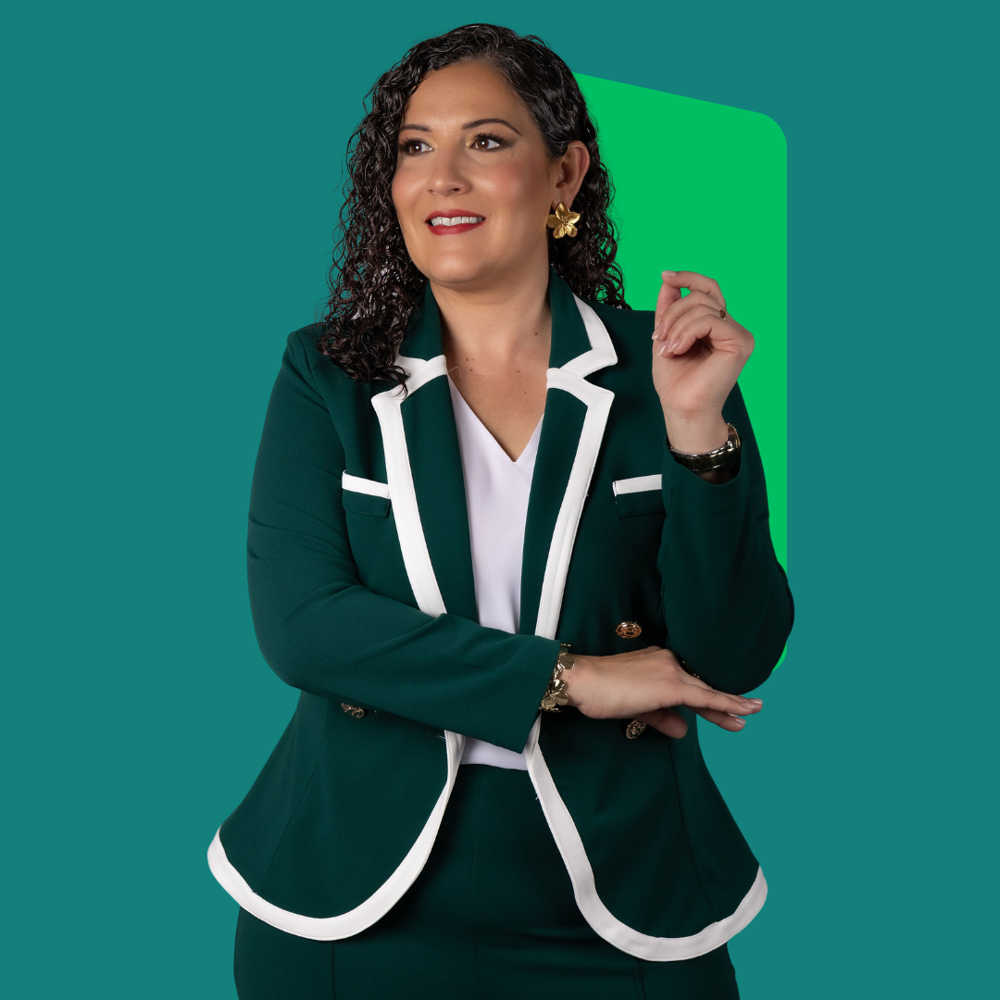

Presidenta CIAPR 2026
Liderazgo que
construye futuro
FRANCHESKA J. RIVERA, P.E.
- CROEMita Destacada
2026 - Tesorera
CIAPR 2024 - Mujer Destacada · Cámara
de Representantes 2022 - Líder Emergente
2010 - Colegiada
desde 2006 - Licencia Profesional

Lo que represento
-
+20
años de servicio
a la profesión -
LIDERAZGO
estratégico
-
RESULTADOS
concretos
Trayectoria
Más de dos décadas sirviendo a la profesión.
Roles actuales
-
Actual
Primera Vicepresidenta del Capítulo de Carolina
-
Actual
Miembro Junta de Directores ASCE PR
-
Actual
Miembro Fundación CIAPR
Recorrido
-
2024 – 2025
Tesorera de la Junta de Gobierno CIAPR
-
2023 – 2025
Presidenta del IIC
-
2022 – 2023
Tesorera de la Sociedad de Ingenieros de Puerto Rico
-
2021 – 2023
Vicepresidenta del IIC
-
2019 – 2021
Tesorera del IIC
-
2010
Líder Emergente CIAPR
-
2006 – 2010
Directora del Capítulo de Mayagüez
Reconocimientos
-
2026
CROEMita Destacada
-
2023
Mujer Destacada por la Legislatura de PR en el Mes de la Mujer
-
2010
Líder Emergente CIAPR
Marca tu calendario
Voto electrónico
CIAPR 2026
JUL
28
Inicia voto electrónico
Martes · 2026
AGO
15
Asamblea general
Sábado · 2026